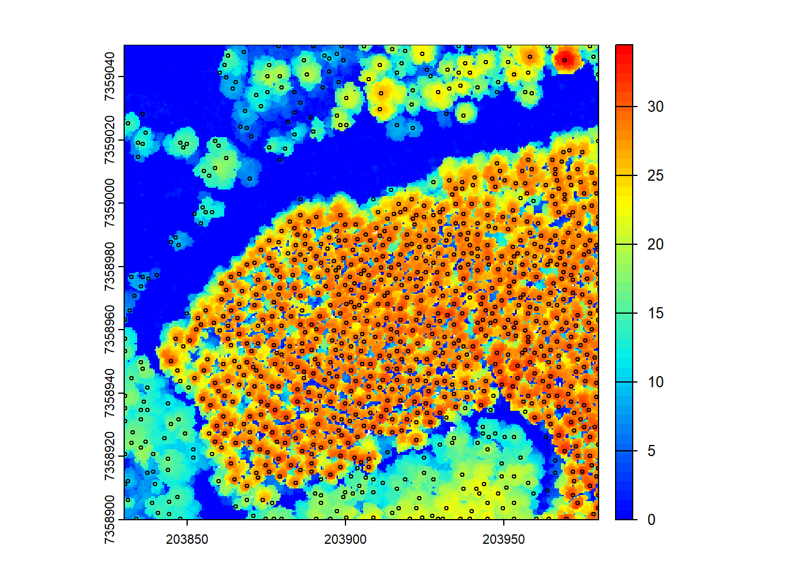
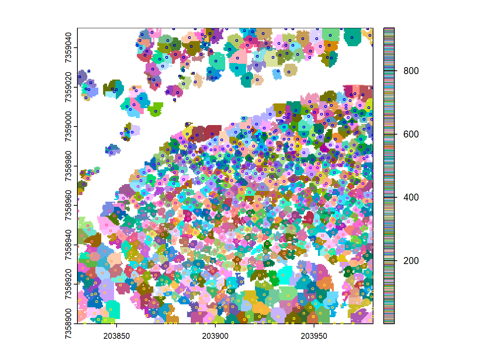
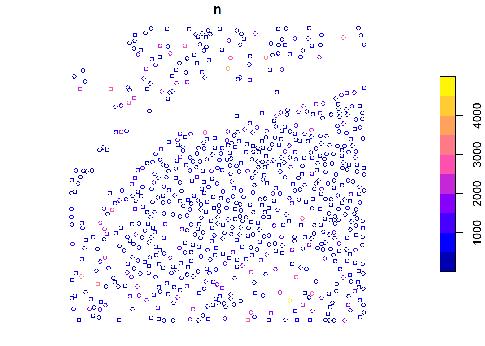
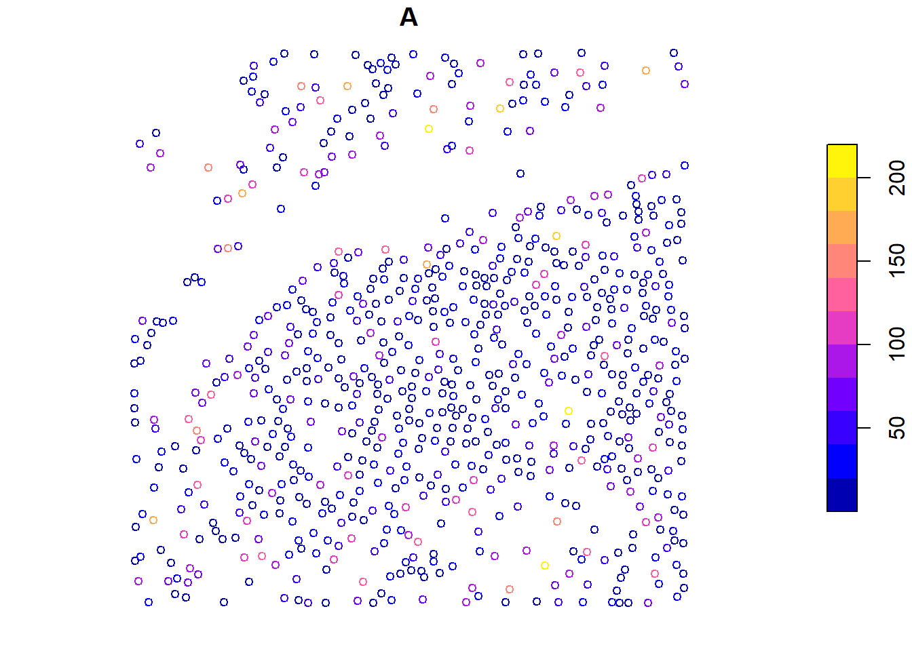
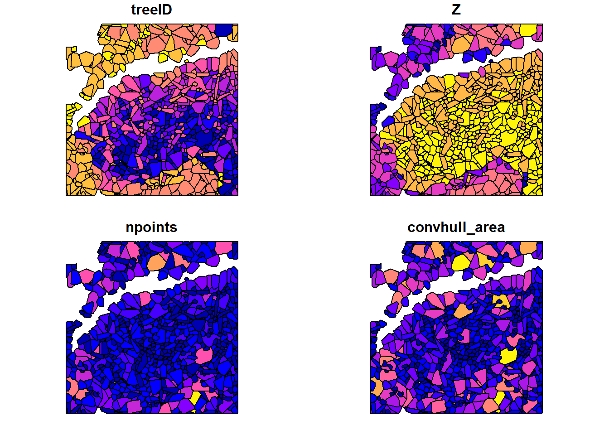
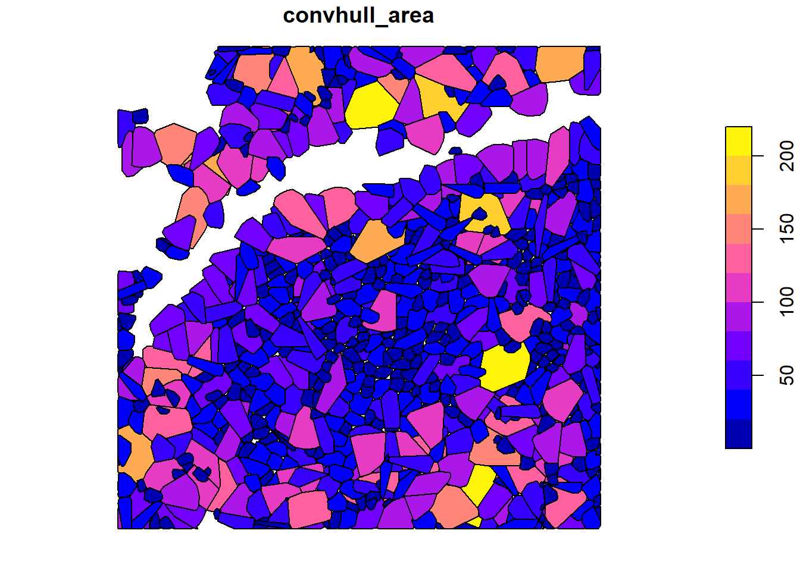
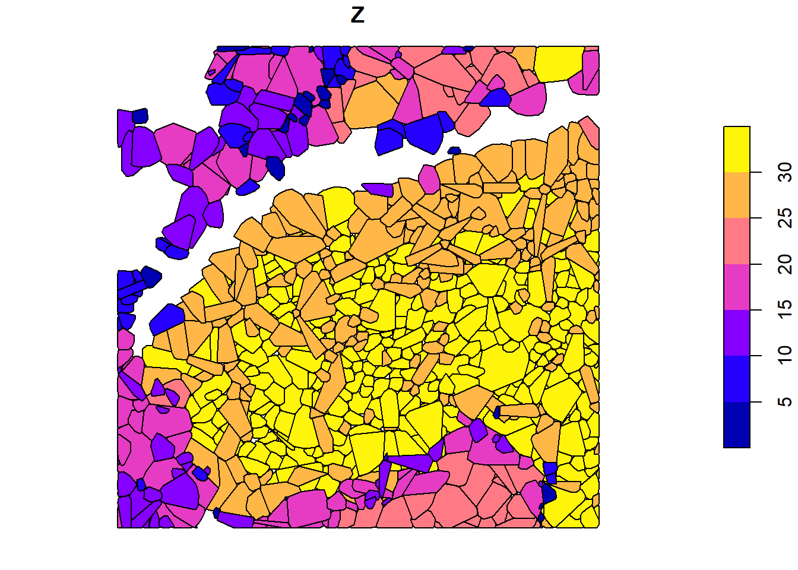

This code demonstrates individual tree segmentation (ITS) using LiDAR data. It covers CHM-based and point cloud-based methods for tree detection and segmentation. The code also shows how to extract metrics at the tree level and visualize them.
Environment
# Clear environmentrm(list =ls(globalenv()))# Load packageslibrary(lidR)library(sf)library(terra)# Read in LiDAR file and set some color paletteslas <-readLAS("data/MixedEucaNat_normalized.laz", filter ="-set_withheld_flag 0")
col <-height.colors(50)col1 <-pastel.colors(900)
CHM based methods
We start by creating a Canopy Height Model (CHM) from the LiDAR data. The rasterize_canopy() function generates the CHM using a specified resolution (res) and a chosen algorithm, here p2r(0.15), to compute the percentiles.
# Generate CHMchm <-rasterize_canopy(las = las, res =0.5, algorithm =p2r(0.15))plot(chm, col = col)
After building the CHM, we visualize it using a color palette (col).
Optionally smooth the CHM
Optionally, we can smooth the CHM using a kernel to remove small-scale variations and enhance larger features like tree canopies.
# Generate kernel and smooth chmkernel <-matrix(1, 3, 3)schm <- terra::focal(x = chm, w = kernel, fun = median, na.rm =TRUE)plot(schm, col = col)
Here, we smooth the CHM using a median filter with a 3x3 kernel. The smoothed CHM (schm) is visualized using a color palette to represent height values.
Tree detection
Next, we detect tree tops using the smoothed CHM. The locate_trees() function identifies tree tops based on local maxima.
Simple feature collection with 935 features and 2 fields
Attribute-geometry relationships: constant (2)
Geometry type: POINT
Dimension: XYZ
Bounding box: xmin: 203830.2 ymin: 7358900 xmax: 203979.8 ymax: 7359050
Projected CRS: SIRGAS 2000 / UTM zone 23S
First 10 features:
treeID Z geometry
1 1 5.230 POINT Z (203878.8 7359050 5...
2 2 3.900 POINT Z (203889.8 7359050 3.9)
3 3 7.360 POINT Z (203898.8 7359050 7...
4 4 17.790 POINT Z (203905.8 7359050 1...
5 5 11.940 POINT Z (203935.8 7359050 1...
6 6 3.275 POINT Z (203939.2 7359050 3...
7 7 21.550 POINT Z (203951.8 7359050 2...
8 8 17.290 POINT Z (203963.8 7359050 1...
9 9 21.085 POINT Z (203977.2 7359050 2...
10 10 19.220 POINT Z (203914.8 7359049 1...
plot(chm, col = col)plot(ttops, col ="black", add =TRUE, cex =0.5)

The detected tree tops (ttops) are plotted on top of the CHM (chm) to visualize their positions.
Segmentation
Now, we perform tree segmentation using the detected tree tops. The segment_trees() function segments the trees in the LiDAR point cloud based on the previously detected tree tops.
# Segment trees using dalpontelas <-segment_trees(las = las, algorithm =dalponte2016(chm = schm, treetops = ttops))
# Count number of trees detected and segmentedlength(unique(las$treeID) |>na.omit())
[1] 935
# Visualize all treesplot(las, color ="treeID")
# Select trees by IDtree25 <-filter_poi(las = las, treeID ==25)tree125 <-filter_poi(las = las, treeID ==125)
plot(tree25, size =4)
plot(tree125, size = 3)
After segmentation, we count the number of trees detected and visualize all the trees in the point cloud. We then select two trees (tree25 and tree125) and visualize them individually.
Variability and testing
Forests are highly variable! This means that some algorithms and parameters will work better than others depending on the data you have. Play around with algorithms and see which works best for your data.
Working with rasters
The lidR package is designed for point clouds, but some functions can be applied to raster data as well. Here, we show how to extract trees from the CHM without using the point cloud directly.
# Generate rasterized delineationtrees <-dalponte2016(chm = chm, treetops = ttops)() # Notice the parenthesis at the endtrees
class : SpatRaster
size : 300, 300, 1 (nrow, ncol, nlyr)
resolution : 0.5, 0.5 (x, y)
extent : 203830, 203980, 7358900, 7359050 (xmin, xmax, ymin, ymax)
coord. ref. : SIRGAS 2000 / UTM zone 23S (EPSG:31983)
source(s) : memory
name : Z
min value : 1
max value : 935
plot(trees, col = col1)plot(ttops, add =TRUE, cex =0.5)
Warning in plot.sf(ttops, add = TRUE, cex = 0.5): ignoring all but the first
attribute

We create tree objects (trees) using the dalponte2016 algorithm with the CHM and tree tops. The resulting objects are visualized alongside the detected tree tops.
Point-cloud based methods (no CHM)
In this section, we will explore tree detection and segmentation methods that do not require a CHM.
Tree detection
We begin with tree detection using the local maxima filtering (lmf) algorithm. This approach directly works with the LiDAR point cloud to detect tree tops.
We detect tree tops using the lmf algorithm and visualize them in 3D by adding the tree tops to the LiDAR plot.
Tree segmentation
Next, we perform tree segmentation using the li2012 algorithm, which directly processes the LiDAR point cloud.
# Segment using lilas <-segment_trees(las = las, algorithm =li2012())
Tree segmentation: 3% (1 threads)
Tree segmentation: 4% (1 threads)
Tree segmentation: 5% (1 threads)
Tree segmentation: 6% (1 threads)
Tree segmentation: 7% (1 threads)
Tree segmentation: 8% (1 threads)
Tree segmentation: 9% (1 threads)
Tree segmentation: 10% (1 threads)
Tree segmentation: 11% (1 threads)
Tree segmentation: 12% (1 threads)
Tree segmentation: 13% (1 threads)
Tree segmentation: 14% (1 threads)
Tree segmentation: 15% (1 threads)
Tree segmentation: 16% (1 threads)
Tree segmentation: 17% (1 threads)
Tree segmentation: 18% (1 threads)
Tree segmentation: 19% (1 threads)
Tree segmentation: 20% (1 threads)
Tree segmentation: 21% (1 threads)
Tree segmentation: 22% (1 threads)
Tree segmentation: 23% (1 threads)
Tree segmentation: 24% (1 threads)
Tree segmentation: 25% (1 threads)
Tree segmentation: 26% (1 threads)
Tree segmentation: 27% (1 threads)
Tree segmentation: 28% (1 threads)
Tree segmentation: 29% (1 threads)
Tree segmentation: 30% (1 threads)
Tree segmentation: 31% (1 threads)
Tree segmentation: 32% (1 threads)
Tree segmentation: 33% (1 threads)
Tree segmentation: 34% (1 threads)
Tree segmentation: 35% (1 threads)
Tree segmentation: 36% (1 threads)
Tree segmentation: 37% (1 threads)
Tree segmentation: 38% (1 threads)
Tree segmentation: 39% (1 threads)
Tree segmentation: 40% (1 threads)
Tree segmentation: 41% (1 threads)
Tree segmentation: 42% (1 threads)
Tree segmentation: 43% (1 threads)
Tree segmentation: 44% (1 threads)
Tree segmentation: 45% (1 threads)
Tree segmentation: 46% (1 threads)
Tree segmentation: 47% (1 threads)
Tree segmentation: 48% (1 threads)
Tree segmentation: 49% (1 threads)
Tree segmentation: 50% (1 threads)
Tree segmentation: 51% (1 threads)
Tree segmentation: 52% (1 threads)
Tree segmentation: 53% (1 threads)
Tree segmentation: 54% (1 threads)
Tree segmentation: 55% (1 threads)
Tree segmentation: 56% (1 threads)
Tree segmentation: 57% (1 threads)
Tree segmentation: 58% (1 threads)
Tree segmentation: 59% (1 threads)
Tree segmentation: 60% (1 threads)
Tree segmentation: 61% (1 threads)
Tree segmentation: 62% (1 threads)
Tree segmentation: 63% (1 threads)
Tree segmentation: 64% (1 threads)
Tree segmentation: 65% (1 threads)
Tree segmentation: 66% (1 threads)
Tree segmentation: 67% (1 threads)
Tree segmentation: 68% (1 threads)
Tree segmentation: 69% (1 threads)
Tree segmentation: 70% (1 threads)
Tree segmentation: 71% (1 threads)
Tree segmentation: 72% (1 threads)
Tree segmentation: 73% (1 threads)
Tree segmentation: 74% (1 threads)
Tree segmentation: 75% (1 threads)
Tree segmentation: 76% (1 threads)
Tree segmentation: 77% (1 threads)
Tree segmentation: 78% (1 threads)
Tree segmentation: 79% (1 threads)
Tree segmentation: 80% (1 threads)
Tree segmentation: 81% (1 threads)
Tree segmentation: 82% (1 threads)
Tree segmentation: 83% (1 threads)
Tree segmentation: 84% (1 threads)
Tree segmentation: 85% (1 threads)
Tree segmentation: 86% (1 threads)
Tree segmentation: 87% (1 threads)
Tree segmentation: 88% (1 threads)
Tree segmentation: 89% (1 threads)
Tree segmentation: 100% (1 threads)
plot(las, color ="treeID")# This algorithm does not seem pertinent for this dataset.
The li2012 algorithm segments the trees in the LiDAR point cloud based on local neighborhood information. However, it may not be optimal for this specific dataset.
Extraction of metrics
We will extract various metrics from the tree segmentation results.
Using crown_metrics()
The crown_metrics() function extracts metrics from the segmented trees using a user-defined function. We use the length of the Z coordinate to obtain the tree height as an example.
# Generate metrics for each delineated crownmetrics <-crown_metrics(las = las, func =~list(n =length(Z)))metrics
Simple feature collection with 752 features and 2 fields
Geometry type: POINT
Dimension: XYZ
Bounding box: xmin: 203830 ymin: 7358900 xmax: 203980 ymax: 7359050
z_range: zmin: 2.02 zmax: 34.46
Projected CRS: SIRGAS 2000 / UTM zone 23S
First 10 features:
treeID n geometry
1 1 2774 POINT Z (203969.4 7359045 3...
2 2 1918 POINT Z (203969.5 7358922 3...
3 3 859 POINT Z (203967.8 7358926 3...
4 4 1605 POINT Z (203943.1 7358936 3...
5 5 454 POINT Z (203954.5 7358949 3...
6 6 417 POINT Z (203957.8 7358949 3...
7 7 946 POINT Z (203949.7 7358943 3...
8 8 1671 POINT Z (203970 7358900 32.09)
9 9 1106 POINT Z (203975.2 7358915 3...
10 10 411 POINT Z (203947.7 7358949 3...
plot(metrics["n"], cex =0.8)

We calculate the number of points (n) in each tree crown using a user-defined function, and then visualize the results.
Applying user-defined functions
We can map any user-defined function at the tree level using the crown_metrics() function, just like pixel_metrics(). Here, we calculate the convex hull area of each tree using a custom function f() and then visualize the results.
# User defined function for area calculationf <-function(x, y) {# Get xy for tree coords <-cbind(x, y)# Convex hull ch <-chull(coords)# Close coordinates ch <-c(ch, ch[1]) ch_coords <- coords[ch, ]# Generate polygon p <- sf::st_polygon(list(ch_coords))#calculate area area <- sf::st_area(p)return(list(A = area))}# Apply user-defined functionmetrics <-crown_metrics(las = las, func =~f(X, Y))metrics
Simple feature collection with 752 features and 2 fields
Geometry type: POINT
Dimension: XYZ
Bounding box: xmin: 203830 ymin: 7358900 xmax: 203980 ymax: 7359050
z_range: zmin: 2.02 zmax: 34.46
Projected CRS: SIRGAS 2000 / UTM zone 23S
First 10 features:
treeID A geometry
1 1 172.51720 POINT Z (203969.4 7359045 3...
2 2 103.84100 POINT Z (203969.5 7358922 3...
3 3 72.18270 POINT Z (203967.8 7358926 3...
4 4 79.85055 POINT Z (203943.1 7358936 3...
5 5 17.34630 POINT Z (203954.5 7358949 3...
6 6 17.45860 POINT Z (203957.8 7358949 3...
7 7 41.13120 POINT Z (203949.7 7358943 3...
8 8 71.97225 POINT Z (203970 7358900 32.09)
9 9 50.51530 POINT Z (203975.2 7358915 3...
10 10 24.61015 POINT Z (203947.7 7358949 3...
plot(metrics["A"], cex =0.8)

3rd party metric packages
Remember that you can use 3rd party packages like lidRmetrics for crown metrics too!
Using pre-defined metrics
Some metrics are already recorded, and we can directly calculate them at the tree level using crown_metrics().
Warning in plot.sf(ttops, add = TRUE, cex = 0.5): ignoring all but the first
attribute

# Visualize individual metrics based on valuesplot(x = cvx_hulls["convhull_area"])

plot(x = cvx_hulls["Z"])

We use crown_metrics() with .stdtreemetrics to segment trees and extract metrics based on crown delineation.
Exercises
Using:
las <-readLAS(files ="data/MixedEucaNat_normalized.laz", filter ="-set_withheld_flag 0")
E1.
Find and count the trees.
E2.
Compute and map the density of trees with a 10 m resolution.
E3.
Segment the trees.
E4.
Assuming that the biomass of a tree can be estimated using the crown area and the mean Z of the points with the formula 2.5 * area + 3 * mean Z, estimate the biomass of each tree.
E5.
Map the total biomass at a resolution of 10 m. The output is a mix of ABA and ITS. Hint: use the terra package to rasterize spatial object with the function rasterize().
Conclusion
This concludes the tutorial on various methods for tree detection, segmentation, and extraction of metrics using the lidR package in R.